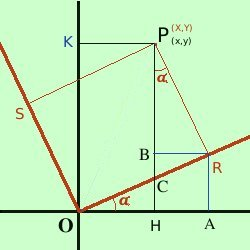
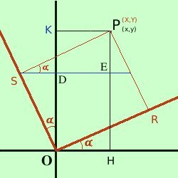

|
Consideriamo in nero un sistema di coordinate in cui il punto P abbia coordinate (che chiameremo vecchie coordinate) P = (x,y) Consideriamo poi in rosso un altro sistema di coordinate in cui il punto P sara' individuato da (nuove coordinate) P = (X,Y)  Sappiamo inoltre che i nuovi assi sono ruotati attorno all'origine rispetto ai vecchi assi dell'angolo α Allora osserva la figura: dobbiamo trovare il segmento OH (x) utilizzando le nuove coordinate X e Y calcoleremo OH come differenza fra OA ed AH Considerando il triangolo OAR per i teoremi sui triangoli rettangoli in trigonometria abbiamo OA = OR cos α = X cos α Ora considero il triangolo PBR essendo BR = HA; l'angolo BPR vale α per i teoremi sui triangoli rettangoli in trigonometria abbiamo AH = BR = PR sen α = Y sen α quindi abbiamo OH = OA - AH = X cos α - Y sen α quindi posso scrivere x = X cos α - Y sen α Troviamo la formula equivalente per la y Osserva la figura a destra: dobbiamo trovare il segmento OK (y) utilizzando le nuove coordinate X e Y  calcoleremo OK come somma fra OD e DK Considerando il triangolo ODS per i teoremi sui triangoli rettangoli in trigonometria abbiamo OD = OS cos α = Y cos α Ora considero il triangolo PES essendo PE = KD; l'angolo PSE vale α per i teoremi sui triangoli rettangoli in trigonometria abbiamo KD = PE = PS sen quindi abbiamo OK = OD + DK = X sen α + Y cos α quindi posso scrivere y = X sen α + Y cos α Poiche' negli esercizi dovremo sostituire le nuove coordinate alle vecchie conviene considerare solamente le formule con prima dell'uguale le vecchie coordinate; Raccogliendo, le equazioni per la rotazione di coordinate saranno
per ricavare le formule inverse possiamo usare il metodo di sostituzione (pero' qui lo saltiamo) e troviamo
Particolarmente importanti sono le formule per una rotazione di 45° sapendo che sen α =
Come esercizio dimostriamo che l'equazione dell'iperbole equilatera x2 - y2 = a2 con una rotazione di 45° si trasforma nell'equazione dell'iperbole equilatera riferita ai propri assi XY = K soluzione |

|

|

|

|